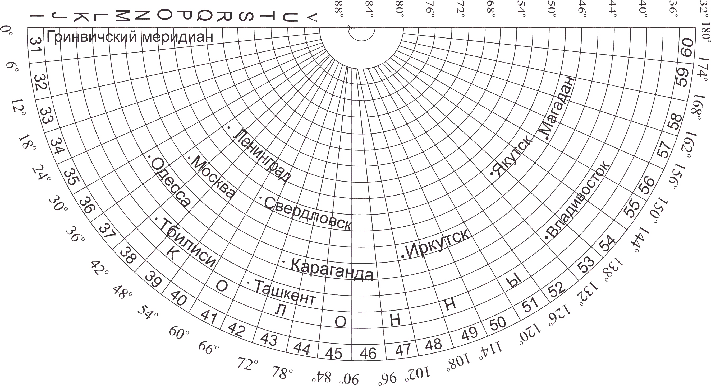
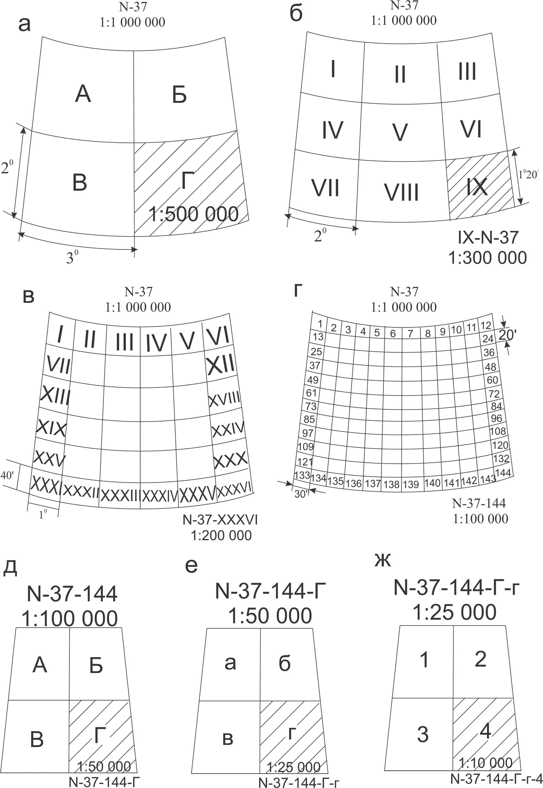

Turli masshtabdagi topografk kartalarni nomenklatura asosi uchun xalqaro 1:1000000 masshtabdagi karta nomenklaturasi asos qilib olingan. Bunda karta varag`ini hosil qilish uchun yer shari 180° uzoqlikdagi meridiandan g`arbdan sharqqa meridianlar bilan zonalarga bo`linadi va ekvator tekisligidan shimol va janub tomonga parallellar o`tkaziladi natijada yer shari trapetsiyalar ya`ni karta varoqlariga bo`linadi.  1:1 000 000 masshtabli karta varag`ining o`lchammeridian bo`yicha 4° va parallel bo`yicha 6° ga teng. Karta varaqlarini nomenklatura tizimida nomerlash uchun ekvatordan qutblarga tomon 4° dan parallel o`tkazilb - qator180° li meridiandan boshlab 6° dan meridianlar o`tkazilib - kolonnalar hosil qilinadi.  Turli masshtabdagi topografk kartalarni nomenklatura asosi uchun xalqaro 1:1000000 masshtabdagi karta nomenklaturasi asos qilib olingan. Bunda karta varag`ini hosil qilish uchun yer shari 180° uzoqlikdagi meridiandan g`arbdan sharqqa meridianlar bilan zonalarga bo`linadi va ekvator tekisligidan shimol va janub tomonga parallellar o`tkaziladi natijada yer shari trapetsiyalar ya`ni karta varoqlariga bo`linadi. Turli masshtabdagi topografk kartalarni nomenklatura asosi uchun xalqaro 1:1000000 masshtabdagi karta nomenklaturasi asos qilib olingan. Bunda karta varag`ini hosil qilish uchun yer shari 180° uzoqlikdagi meridiandan g`arbdan sharqqa meridianlar bilan zonalarga bo`linadi va ekvator tekisligidan shimol va janub tomonga parallellar o`tkaziladi natijada yer shari trapetsiyalar ya`ni karta varoqlariga bo`linadi.Turli masshtabdagi topografk kartalarni nomenklatura asosi uchun xalqaro 1:1000000 masshtabdagi karta nomenklaturasi asos qilib olingan. Bunda karta varag`ini hosil qilish uchun yer shari 180° uzoqlikdagi meridiandan g`arbdan sharqqa meridianlar bilan zonalarga bo`linadi va ekvator tekisligidan shimol va janub tomonga parallellar o`tkaziladi natijada yer shari trapetsiyalar ya`ni karta varoqlariga bo`linadi.